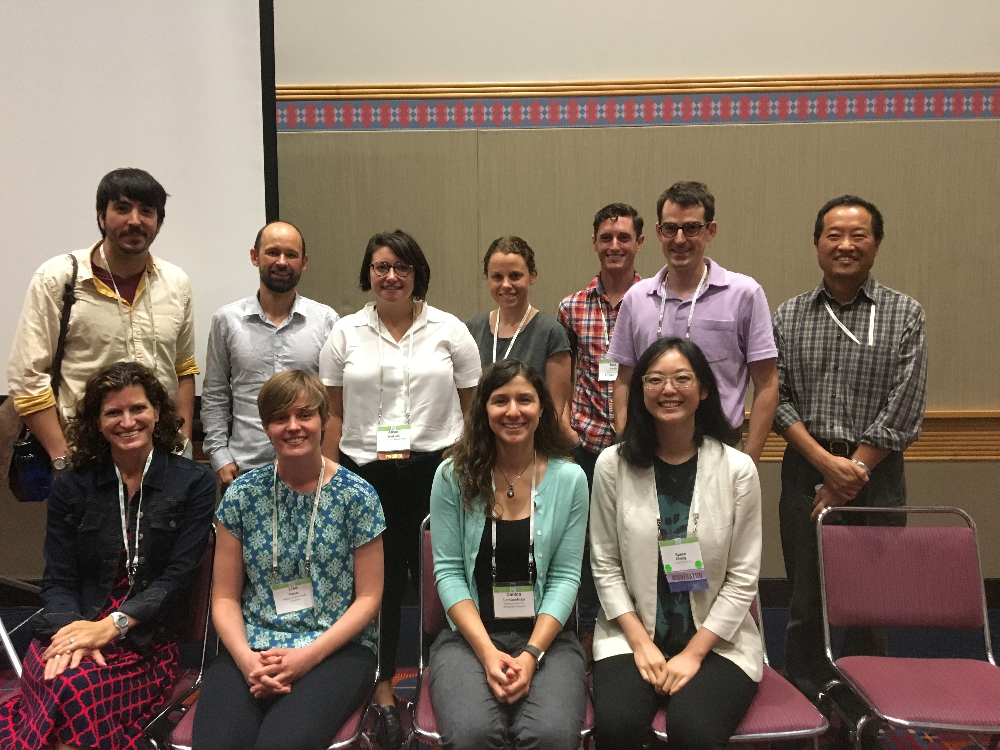

Aug 11, 2017:
Nick will be convening an IGNITE session at ESA 2017 on 8/11 at 8:00 AM. The session will focus on ecological processes within large-scale models.

Photo: Global Change Ecology IGNITE session participants. Top: Leo Calle, Stuart Grandy, Allison Marklein, Caroline Farrior, Nick Smith, Quinn Thomas, Yiqi Luo. Bottom: Erica Smithwick, Lisa Haber, Danica Lombardozzi, Susan Cheng.
Aug 10, 2017:
Nick will be at the annual Ecological Society of America Meeting in Portland, OR from August 6-11. He will be presenting his work on modeling Vcmax from first principles on Thursday, Aug. 10 at 8:00 AM. Contact Nick for a copy of the presentation.